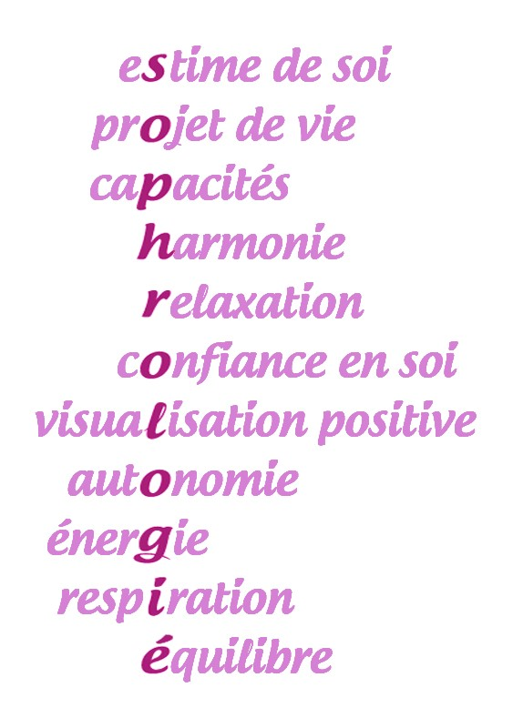
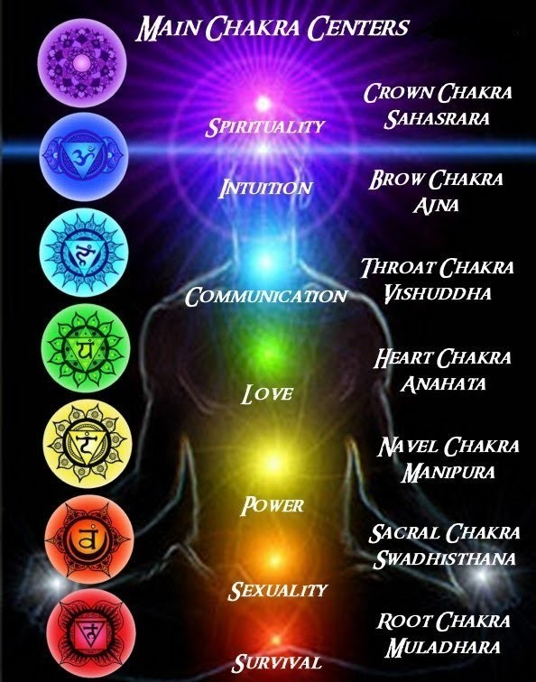
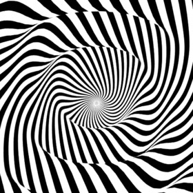
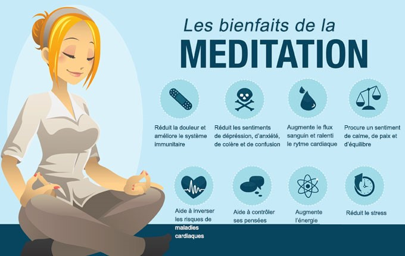
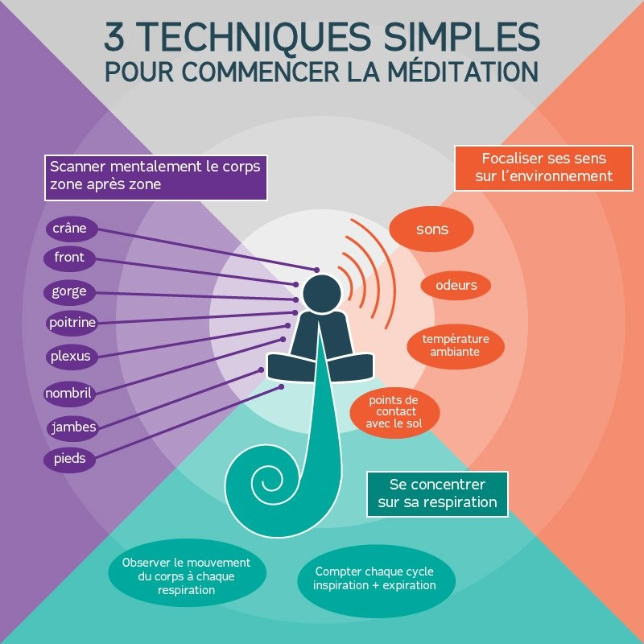
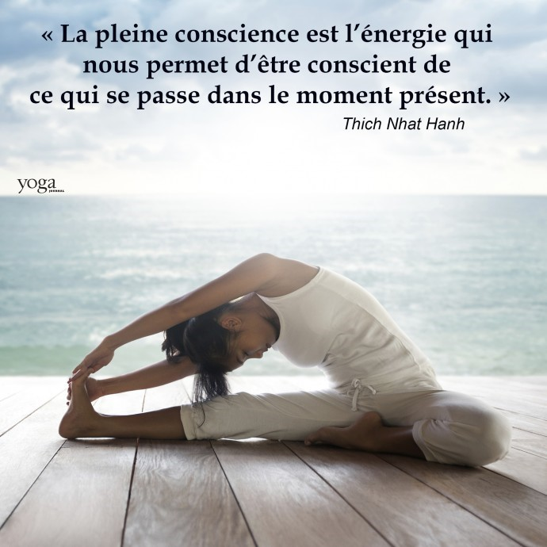

PROFIL NICKYIE
LA SOPHRO THERAPIE ? La sophro thérapie Caycédienne est une science, élaborée dans les années soixante par le docteur Alphonso Caycedo, neuro-psychiatre Colombien. Intéressé par le psychisme humain, les états et les niveaux de conscience humaine, ce jeune médecin fonde initialement sa méthode,sur le training autogène deSchultz, l’hypno thérapie thérapeutique, la relaxation progressive de Jacobson et la phénoménologie comme philosophie. Il établit sa propre terminologie et cherche également en créant le principe d’alliance sophronique, à établir un rapport plus respectueux et personnalisé avec ses patients. Il fait évoluer sa méthode en s’initiant au cours de ses voyages, au yoga en Inde, au zen au Japon. Il en rapporte des techniques tout en se défaisant du contexte religieux et philosophique. C’est de l’exploration de toutes ces méthodes, ainsi que de la rencontre entre l’Orient et l’Occident que le docteur Caycedo fera de la « sophro thérapie » une méthode psycho-corporelle permettant aujourd’hui à qui le souhaite de maîtriser La définition selon Caycedo, en 1994 : «La sophro thérapie est l’étude de la conscience humaine et des valeurs existentielles » Le sens étymologique SOS= Equilibre, harmonie PHREN= Esprit, conscience LOGOS= Science C'EST QUOI LE REIKI ? Le Reiki est une thérapie manuelle qui apporte un supplément d'énergie à notre organisme. Le praticien pose ses mains sur le corps et laisse couler l'énergie Le Reiki n'est pas un massage, il n'y a pas de mouvement et
ll nous permet de prendre conscience de nos tensions, de nos blocages, ... et de développer le processus d'auto-guérison. Le mot Reiki vient du japonais Rei (Energie universelle) et Ki
L'énergie du Reiki est une énergie dont chacun bénéficie à la naissance. Mais à cause de notre rythme et de notre hygiène de vie, ce lien étroit entre la source et nous s'amoindrit. C'est un sentiment, un savoir et une reconnaissance de quelque chose de profond, d'agréable et de confortable. COMMENT DEFINIR AU MIEUX L’ HYPNO THERAPIE ?
"L'hypno thérapie est un état temporaire d'attention modifiée dont la caractéristique est une suggestibilité accrue." Disons pour être plus clair que le sujet est amené à concentrer son attention sur le plan visuel (un point précis) et auditif (la voix de l'opérateur). On peut donc parler d'une hyperconcentration, plutôt que d'un relâchement, d'une décontraction mentale. On appellera ce cas de figure, l'hypno thérapie active, ou provoquée ; c'est celle qui nous intéresse ici... car des états fort similaires se retrouvent dans certaines circonstances, et sans l'appui de la parole : par contagion, sensations visuelles, bruit monotone, etc. Qui n'a jamais manqué s'endormir au volant, bercé par le bruit du moteur, en position décontractée, et, la nuit, ébloui par les phares ? En résumé, et au vu des différentes définitions proposées, on peut affirmer que la nature exacte de l'hypno thérapie est encore mal connue. Elle a pourtant été à la base de toutes les psychothérapies modernes., et pourrait encore jouer un rôle important dans la psychopathologie et la psychothérapie expérimentales. ET LA MEDITATION ? : Action de réfléchir, de penser profondément à un sujet, à la réalisation de quelque chose : Cet ouvrage est le fruit de ses méditations. Attitude qui consiste à s'absorber dans une réflexion profonde : Se plonger dans la méditation. Oraison mentale, application de l'esprit à des vérités religieuses.
Le terme méditation (du latin meditatio) désigne une pratique mentale ou spirituelle. Elle consiste souvent en une attention portée sur un certain objet de pensée (méditer un principe philosophique par exemple, dans le but d'en approfondir le sens) ou sur soi (dans le but de pratique méditative afin de réaliser son identité spirituelle). La méditation implique généralement que le pratiquant amène son attention de façon centripète sur un seul point de référence1 . La méditation (bhāvanā en sanskrit et pali) est au cœur de la pratique du bouddhisme, de l'hindouisme, du jaïnisme, du sikhisme, du taoïsme, du yoga, de l'islam, du christianisme ainsi que d'autres formes plus récentes de spiritualité, mais également médicale. C'est une pratique visant à produire la paix intérieure, la vacuité de l'esprit, des états de conscience modifiés ou l'apaisement progressif du mental voire une simple relaxation, obtenus en se « familiarisant » avec un objet d'observation : qu'il soit extérieur (comme un objet réel ou un symbole) ou intérieur (comme l'esprit ou un concept,   PLEINE CONSCIENCE La pleine conscience (parfois également appelée attention juste, samma-sati en pali, samyak-smriti en sanskrit1, ou présence attentive) est une expression dérivée de l’enseignement de Siddhartha Gautama et désignant la conscience vigilante de ses propres pensées, actions et motivations. Elle joue un rôle primordial dans le bouddhisme où il est affirmé que la pleine conscience est un facteur essentiel pour la libération (Bodhi ou éveil spirituel). Il s’agit du septième membre du noble sentier octuple. En Occident, la pleine conscience est utilisée comme une thérapie ayant pour but la réduction du stress et la prévention de rechutes dépressives.
L’attention juste ou pleine conscience consiste à ramener son attention sur l'instant présent et à examiner les sensations qui se présentent à l'esprit, comment elles apparaissent, comment elles durent quelque temps, et comment elles disparaissent. Cette pratique permet de se rendre compte de façon directe si une sensation est quelquefois permanente ou bien toujours impermanente. Par la suite, le pratiquant va aussi examiner la matière (en particulier le corps), les perceptions, les habitudes mentales positives ou négatives, la conscience, comment toutes les choses apparaissent, comment elles durent et comment elles disparaissent. L'observateur reste neutre et silencieux (le « silence mental ») en examinant l'apparition et la disparition des sensations agréables, neutres ou désagréables, sans juger, sans chercher à retenir la sensation agréable ni à rejeter la sensation désagréable. L'observateur apprend à se détacher et se libère progressivement de la matière, de la sensation, de la perception, des conditionnements mentaux, de la conscience, et donc de duḥkha. S'il fait le choix d'abandonner dukkha, c'est parce qu'il a la conviction que ce phénomène est toujours à double manifestation, joie et tristesse, donc « pas de satisfaction durable ». Cette pleine conscience n’est pas limitée à la pratique de la méditation, mais elle consiste simplement à observer les objets physiques et mentaux qui se présentent à l'esprit. Quand un objet disparaît, la pleine conscience ne cesse pas, elle est tournée par l'observateur vers un objet « par défaut » : le souffle ou la marche. Quand un nouvel objet apparaît à l'esprit, l'attention délaisse l'objet « par défaut » et s'applique à observer attentivement le nouvel objet selon les deux aspects de sa nature, comme vérité conventionnelle (sammuti sacca) et comme vérité ultime (paramattha sacca). L'attention sur le souffle (ānāpānasati) : inspire, petite pause, expire, petite pause, n'est pas une fin en soi mais elle soutient efficacement la vitalité de la pleine conscience. Le Bouddha conseille d'observer la sensation intérieurement (dans le mental) et extérieurement (dans le corps). Par exemple, si l'observateur voit dans le mental : "chaud", il peut voir aussi dans le corps : dilatation des vaisseaux sanguins, transpiration, etc. Ensuite, si l'observateur voit dans le mental : "froid", il peut voir aussi dans le corps : contraction des vaisseaux sanguins, grelottement, etc. Cette étape est importante car le pratiquant apprend à voir de façon directe que le mental échange rapidement de nombreuses informations avec le corps par l'intermédiaire de l'inconscient. La pleine conscience expérimente le corps et l'esprit dans ses deux composants, conscient et inconscient, dans le but de tout nettoyer, de tout purifier. La pleine conscience se situe au-delà de la première forme de sagesse : la dévotion, et au-delà de la deuxième forme : la logique de l'intellect. Elle est la troisième forme de sagesse, dite bhavana-maya panna, la vision directe de la réalité ultime en toute chose. L’ASBL vous invite aussi à des dégustations vegan Sur réservation de 11 à 13H Et de 17 à 19H Vous pouvez aussi vous approvisionner en «Shop vegan food & drink » sur commande au 0472/913553 Par exemple
Vin vegan, limonade, smothies….
|
|||||||||||||||||||||||||||||||||||||||||||||||
|
|||||||||||||||||||||||||||||||||||||||||||||||